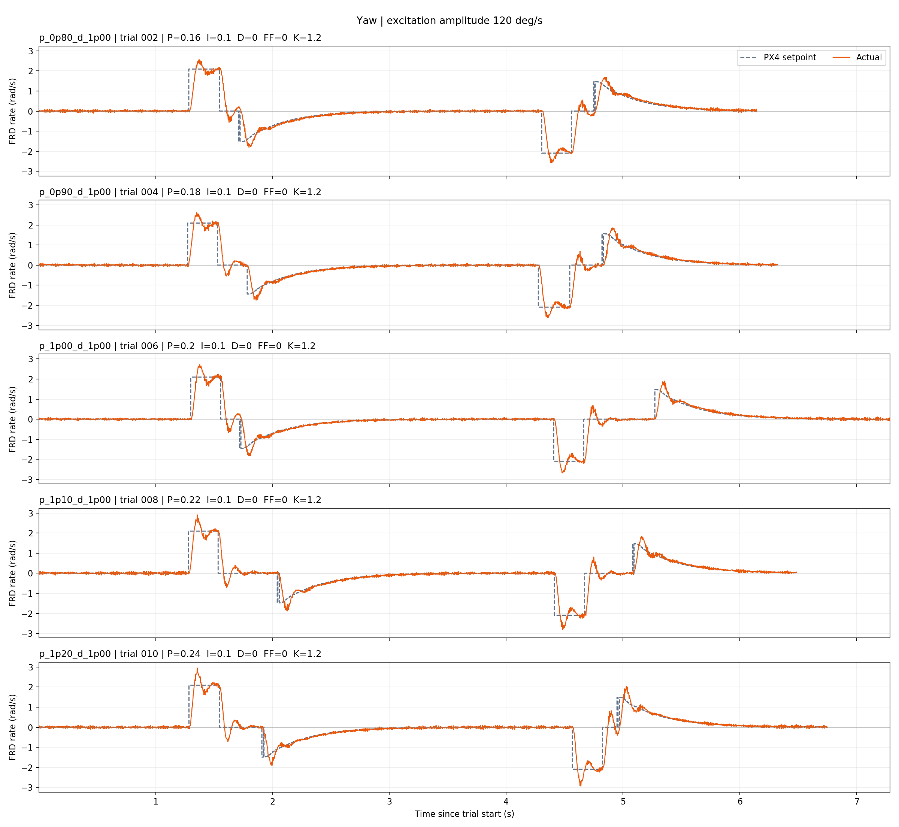
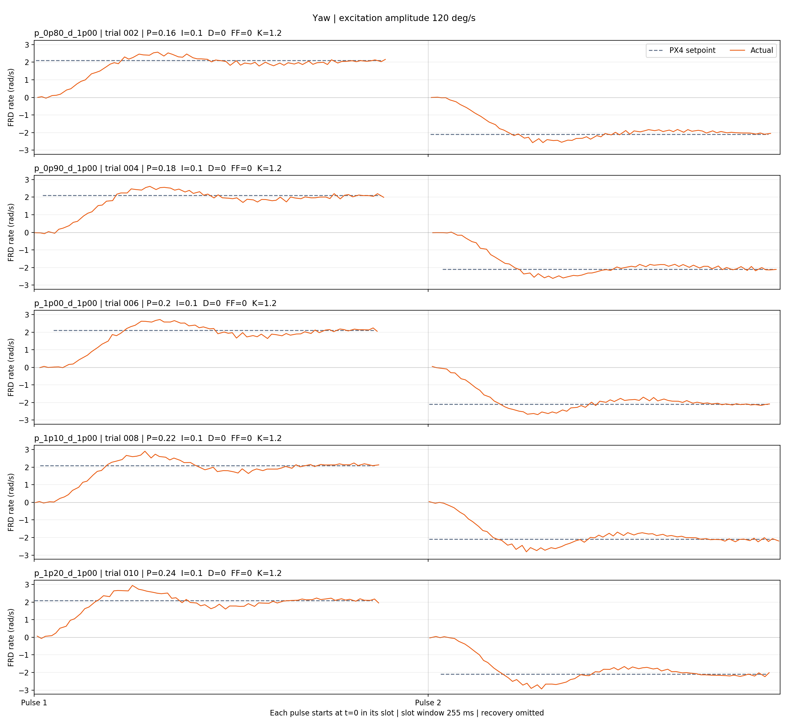
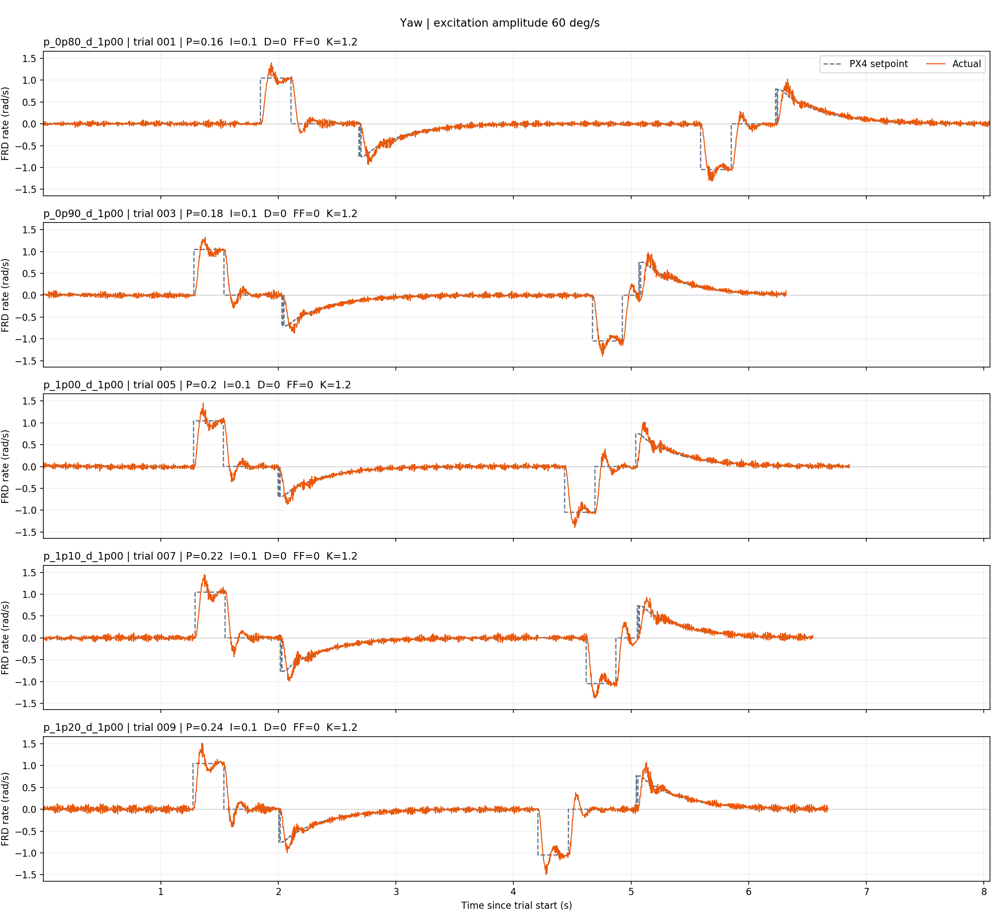
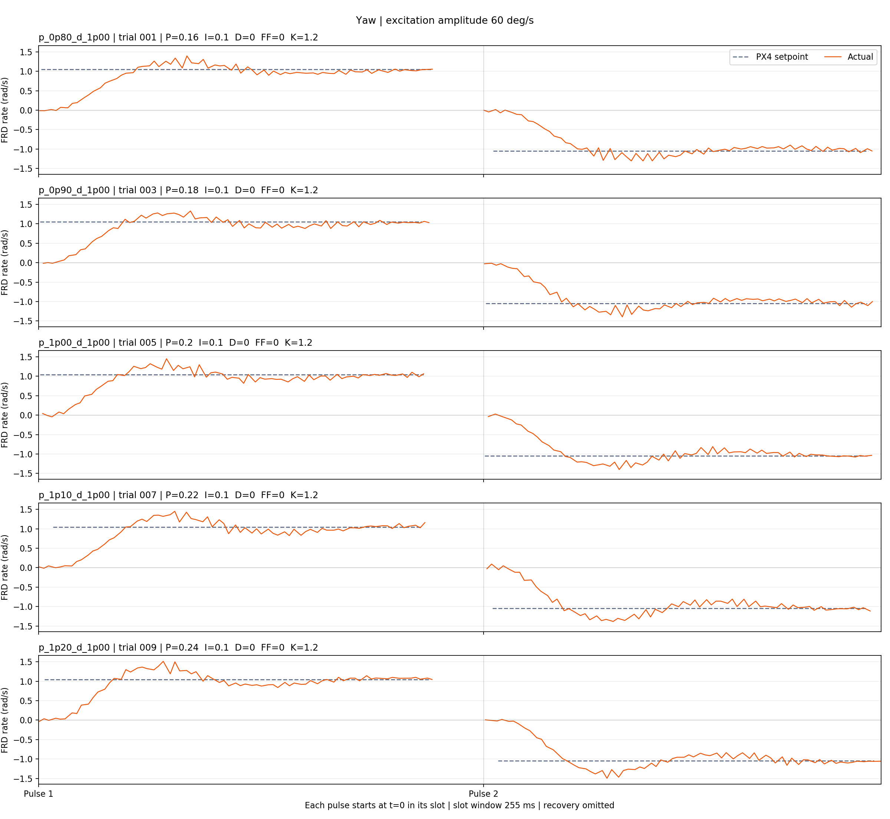

4 组实验 · 162 个完成试次 · 220 个已分析脉冲
pitch_pd_20240618_050448_10553425 组候选 · 50 个完成试次 · 100 个已分析脉冲
实验文件 candidates.yaml clock.yaml events.yaml log_189_2026-11-13-22-13-52.ulg timesync.csv
分析结果 summary.csv report.json
| 试次 | 候选 | P | D | 幅值 °/s | 方向 | RMSE rad/s | 超调 % | 上升时间 s |
|---|---|---|---|---|---|---|---|---|
| 1 | p_0p80_d_0p80 | 0.096 | 0.0024 | 60 | positive | 0.443 | 12.31 | 0.07799 |
| 1 | p_0p80_d_0p80 | 0.096 | 0.0024 | 60 | negative | 0.4335 | 9.887 | 0.0809 |
| 2 | p_0p80_d_0p80 | 0.096 | 0.0024 | 120 | positive | 0.8204 | 5.246 | 0.07344 |
| 2 | p_0p80_d_0p80 | 0.096 | 0.0024 | 120 | negative | 0.8773 | 3.204 | 0.07344 |
| 3 | p_0p80_d_0p90 | 0.096 | 0.0027 | 60 | positive | 0.4727 | 11.04 | 0.07789 |
| 3 | p_0p80_d_0p90 | 0.096 | 0.0027 | 60 | negative | 0.439 | 9.675 | 0.06591 |
| 4 | p_0p80_d_0p90 | 0.096 | 0.0027 | 120 | positive | 0.8345 | 6.105 | 0.07647 |
| 4 | p_0p80_d_0p90 | 0.096 | 0.0027 | 120 | negative | 0.886 | 5.154 | 0.07793 |
| 5 | p_0p80_d_1p00 | 0.096 | 0.003 | 60 | positive | 0.4144 | 10.33 | 0.08092 |
| 5 | p_0p80_d_1p00 | 0.096 | 0.003 | 60 | negative | 0.4165 | 9.518 | 0.07642 |
| 6 | p_0p80_d_1p00 | 0.096 | 0.003 | 120 | positive | 0.7831 | 7.725 | 0.08387 |
| 6 | p_0p80_d_1p00 | 0.096 | 0.003 | 120 | negative | 0.8663 | 6.918 | 0.08994 |
| 7 | p_0p80_d_1p10 | 0.096 | 0.0033 | 60 | positive | 0.4279 | 10.06 | 0.08096 |
| 7 | p_0p80_d_1p10 | 0.096 | 0.0033 | 60 | negative | 0.4536 | 1.527 | 0.1154 |
| 8 | p_0p80_d_1p10 | 0.096 | 0.0033 | 120 | positive | 0.9263 | 3.274 | 0.1019 |
| 8 | p_0p80_d_1p10 | 0.096 | 0.0033 | 120 | negative | 0.8467 | 0.9749 | 0.1003 |
| 9 | p_0p80_d_1p20 | 0.096 | 0.0036 | 60 | positive | 0.4745 | 10.87 | 0.1108 |
| 9 | p_0p80_d_1p20 | 0.096 | 0.0036 | 60 | negative | 0.4591 | 5.551 | 0.1004 |
| 10 | p_0p80_d_1p20 | 0.096 | 0.0036 | 120 | positive | 0.8544 | 6.127 | 0.1019 |
| 10 | p_0p80_d_1p20 | 0.096 | 0.0036 | 120 | negative | 0.8528 | 3.463 | 0.1049 |
| 11 | p_0p90_d_0p80 | 0.108 | 0.0024 | 60 | positive | 0.3957 | 14.03 | 0.06294 |
| 11 | p_0p90_d_0p80 | 0.108 | 0.0024 | 60 | negative | 0.4276 | 6.398 | 0.07342 |
| 12 | p_0p90_d_0p80 | 0.108 | 0.0024 | 120 | positive | 0.8423 | 5.712 | 0.07043 |
| 12 | p_0p90_d_0p80 | 0.108 | 0.0024 | 120 | negative | 0.7886 | 3.631 | 0.06294 |
| 13 | p_0p90_d_0p90 | 0.108 | 0.0027 | 60 | positive | 0.3918 | 14.38 | 0.06743 |
| 13 | p_0p90_d_0p90 | 0.108 | 0.0027 | 60 | negative | 0.3746 | 7.749 | 0.05545 |
| 14 | p_0p90_d_0p90 | 0.108 | 0.0027 | 120 | positive | 0.7698 | 3.825 | 0.07347 |
| 14 | p_0p90_d_0p90 | 0.108 | 0.0027 | 120 | negative | 0.8153 | 2.357 | 0.08537 |
| 15 | p_0p90_d_1p00 | 0.108 | 0.003 | 60 | positive | 0.4199 | 5.109 | 0.07646 |
| 15 | p_0p90_d_1p00 | 0.108 | 0.003 | 60 | negative | 0.4224 | 2.317 | 0.07043 |
| 16 | p_0p90_d_1p00 | 0.108 | 0.003 | 120 | positive | 0.8934 | 4.235 | 0.07643 |
| 16 | p_0p90_d_1p00 | 0.108 | 0.003 | 120 | negative | 0.8576 | 6.141 | 0.07343 |
| 17 | p_0p90_d_1p10 | 0.108 | 0.0033 | 60 | positive | 0.453 | 4.975 | 0.08391 |
| 17 | p_0p90_d_1p10 | 0.108 | 0.0033 | 60 | negative | 0.4128 | 11.08 | 0.07649 |
| 18 | p_0p90_d_1p10 | 0.108 | 0.0033 | 120 | positive | 0.848 | 3.495 | 0.09136 |
| 18 | p_0p90_d_1p10 | 0.108 | 0.0033 | 120 | negative | 0.8338 | 3.802 | 0.07942 |
| 19 | p_0p90_d_1p20 | 0.108 | 0.0036 | 60 | positive | 0.4258 | 18.44 | 0.07343 |
| 19 | p_0p90_d_1p20 | 0.108 | 0.0036 | 60 | negative | 0.4061 | 6.242 | 0.08991 |
| 20 | p_0p90_d_1p20 | 0.108 | 0.0036 | 120 | positive | 0.9901 | 1.1 | 0.1004 |
| 20 | p_0p90_d_1p20 | 0.108 | 0.0036 | 120 | negative | 0.9214 | 2.707 | 0.1019 |
| 21 | p_1p00_d_0p80 | 0.12 | 0.0024 | 60 | positive | 0.3967 | 4.058 | 0.07043 |
| 21 | p_1p00_d_0p80 | 0.12 | 0.0024 | 60 | negative | 0.4104 | 8.629 | 0.06439 |
| 22 | p_1p00_d_0p80 | 0.12 | 0.0024 | 120 | positive | 0.9198 | 4.353 | 0.05844 |
| 22 | p_1p00_d_0p80 | 0.12 | 0.0024 | 120 | negative | 0.8323 | 3.103 | 0.05993 |
| 23 | p_1p00_d_0p90 | 0.12 | 0.0027 | 60 | positive | 0.4094 | 12.23 | 0.06294 |
| 23 | p_1p00_d_0p90 | 0.12 | 0.0027 | 60 | negative | 0.4712 | 5.406 | 0.06592 |
| 24 | p_1p00_d_0p90 | 0.12 | 0.0027 | 120 | positive | 0.8305 | 5.061 | 0.06593 |
| 24 | p_1p00_d_0p90 | 0.12 | 0.0027 | 120 | negative | 0.8832 | 1.793 | 0.05994 |
| 25 | p_1p00_d_1p00 | 0.12 | 0.003 | 60 | positive | 0.4212 | 6.064 | 0.07638 |
| 25 | p_1p00_d_1p00 | 0.12 | 0.003 | 60 | negative | 0.4301 | 7.848 | 0.06288 |
| 26 | p_1p00_d_1p00 | 0.12 | 0.003 | 120 | positive | 0.8142 | 6.779 | 0.07041 |
| 26 | p_1p00_d_1p00 | 0.12 | 0.003 | 120 | negative | 0.7877 | 5.64 | 0.05994 |
| 27 | p_1p00_d_1p10 | 0.12 | 0.0033 | 60 | positive | 0.4643 | 9.967 | 0.05994 |
| 27 | p_1p00_d_1p10 | 0.12 | 0.0033 | 60 | negative | 0.3941 | 10.01 | 0.06294 |
| 28 | p_1p00_d_1p10 | 0.12 | 0.0033 | 120 | positive | 0.7812 | 5.5 | 0.06893 |
| 28 | p_1p00_d_1p10 | 0.12 | 0.0033 | 120 | negative | 0.7722 | 6.433 | 0.06293 |
| 29 | p_1p00_d_1p20 | 0.12 | 0.0036 | 60 | positive | 0.4217 | 12.68 | 0.06298 |
| 29 | p_1p00_d_1p20 | 0.12 | 0.0036 | 60 | negative | 0.4012 | 7.693 | 0.07344 |
| 30 | p_1p00_d_1p20 | 0.12 | 0.0036 | 120 | positive | 0.7648 | 3.363 | 0.08091 |
| 30 | p_1p00_d_1p20 | 0.12 | 0.0036 | 120 | negative | 0.8334 | 2.599 | 0.08695 |
| 31 | p_1p10_d_0p80 | 0.132 | 0.0024 | 60 | positive | 0.3915 | 5.784 | 0.0554 |
| 31 | p_1p10_d_0p80 | 0.132 | 0.0024 | 60 | negative | 0.4371 | 14.57 | 0.03596 |
| 32 | p_1p10_d_0p80 | 0.132 | 0.0024 | 120 | positive | 0.7335 | 6.702 | 0.05246 |
| 32 | p_1p10_d_0p80 | 0.132 | 0.0024 | 120 | negative | 0.7665 | 4.805 | 0.05544 |
| 33 | p_1p10_d_0p90 | 0.132 | 0.0027 | 60 | positive | 0.4441 | 1.175 | 0.05994 |
| 33 | p_1p10_d_0p90 | 0.132 | 0.0027 | 60 | negative | 0.3896 | 7.439 | 0.04645 |
| 34 | p_1p10_d_0p90 | 0.132 | 0.0027 | 120 | positive | 0.9144 | 4.981 | 0.05845 |
| 34 | p_1p10_d_0p90 | 0.132 | 0.0027 | 120 | negative | 0.8023 | 5.694 | 0.04195 |
| 35 | p_1p10_d_1p00 | 0.132 | 0.003 | 60 | positive | 0.3807 | 5.48 | 0.05993 |
| 35 | p_1p10_d_1p00 | 0.132 | 0.003 | 60 | negative | 0.4029 | 5.878 | 0.06593 |
| 36 | p_1p10_d_1p00 | 0.132 | 0.003 | 120 | positive | 1.009 | 2.402 | 0.06593 |
| 36 | p_1p10_d_1p00 | 0.132 | 0.003 | 120 | negative | 0.7842 | 3.682 | 0.05543 |
| 37 | p_1p10_d_1p10 | 0.132 | 0.0033 | 60 | positive | 0.4233 | 7.633 | 0.08092 |
| 37 | p_1p10_d_1p10 | 0.132 | 0.0033 | 60 | negative | 0.428 | 5.285 | 0.08391 |
| 38 | p_1p10_d_1p10 | 0.132 | 0.0033 | 120 | positive | 0.7496 | 5.236 | 0.06294 |
| 38 | p_1p10_d_1p10 | 0.132 | 0.0033 | 120 | negative | 0.9272 | 1.334 | 0.06888 |
| 39 | p_1p10_d_1p20 | 0.132 | 0.0036 | 60 | positive | 0.3524 | 16.59 | 0.07038 |
| 39 | p_1p10_d_1p20 | 0.132 | 0.0036 | 60 | negative | 0.4383 | 8.052 | 0.07342 |
| 40 | p_1p10_d_1p20 | 0.132 | 0.0036 | 120 | positive | 0.7401 | 6.412 | 0.06594 |
| 40 | p_1p10_d_1p20 | 0.132 | 0.0036 | 120 | negative | 0.7772 | 0.8246 | 0.06293 |
| 41 | p_1p20_d_0p80 | 0.144 | 0.0024 | 60 | positive | 0.3759 | 11.15 | 0.05244 |
| 41 | p_1p20_d_0p80 | 0.144 | 0.0024 | 60 | negative | 0.3698 | 9.782 | 0.03446 |
| 42 | p_1p20_d_0p80 | 0.144 | 0.0024 | 120 | positive | 0.8167 | 7.015 | 0.04794 |
| 42 | p_1p20_d_0p80 | 0.144 | 0.0024 | 120 | negative | 0.8382 | 8.066 | 0.04949 |
| 43 | p_1p20_d_0p90 | 0.144 | 0.0027 | 60 | positive | 0.3604 | 10.38 | 0.04198 |
| 43 | p_1p20_d_0p90 | 0.144 | 0.0027 | 60 | negative | 0.5027 | 4.732 | 0.0869 |
| 44 | p_1p20_d_0p90 | 0.144 | 0.0027 | 120 | positive | 0.7308 | 4.986 | 0.05244 |
| 44 | p_1p20_d_0p90 | 0.144 | 0.0027 | 120 | negative | 0.8255 | 8.175 | 0.04495 |
| 45 | p_1p20_d_1p00 | 0.144 | 0.003 | 60 | positive | 0.409 | 11.31 | 0.07342 |
| 45 | p_1p20_d_1p00 | 0.144 | 0.003 | 60 | negative | 0.4544 | 3.683 | 0.0465 |
| 46 | p_1p20_d_1p00 | 0.144 | 0.003 | 120 | positive | 0.7854 | 4.962 | 0.05245 |
| 46 | p_1p20_d_1p00 | 0.144 | 0.003 | 120 | negative | 0.829 | 2.365 | 0.04944 |
| 47 | p_1p20_d_1p10 | 0.144 | 0.0033 | 60 | positive | 0.3557 | 11 | 0.05243 |
| 47 | p_1p20_d_1p10 | 0.144 | 0.0033 | 60 | negative | 0.448 | 4.04 | 0.05244 |
| 48 | p_1p20_d_1p10 | 0.144 | 0.0033 | 120 | positive | 0.9288 | 6.499 | 0.06287 |
| 48 | p_1p20_d_1p10 | 0.144 | 0.0033 | 120 | negative | 0.7647 | 4.95 | 0.04195 |
| 49 | p_1p20_d_1p20 | 0.144 | 0.0036 | 60 | positive | 0.3654 | 15.88 | 0.05842 |
| 49 | p_1p20_d_1p20 | 0.144 | 0.0036 | 60 | negative | 0.4328 | 6.844 | 0.07342 |
| 50 | p_1p20_d_1p20 | 0.144 | 0.0036 | 120 | positive | 0.8708 | 3.125 | 0.06299 |
| 50 | p_1p20_d_1p20 | 0.144 | 0.0036 | 120 | negative | 0.811 | 0.3087 | 0.06598 |
roll_pd_20240618_043052_291325 组候选 · 50 个完成试次 · 100 个已分析脉冲
实验文件 candidates.yaml clock.yaml events.yaml log_190_2026-11-13-22-38-32.ulg timesync.csv
分析结果 summary.csv report.json
| 试次 | 候选 | P | D | 幅值 °/s | 方向 | RMSE rad/s | 超调 % | 上升时间 s |
|---|---|---|---|---|---|---|---|---|
| 1 | p_0p80_d_0p80 | 0.144 | 0.00288 | 60 | positive | 0.3448 | 3.419 | 0.04796 |
| 1 | p_0p80_d_0p80 | 0.144 | 0.00288 | 60 | negative | 0.3442 | 2.782 | 0.04495 |
| 2 | p_0p80_d_0p80 | 0.144 | 0.00288 | 120 | positive | 0.6944 | 0.6198 | 0.04795 |
| 2 | p_0p80_d_0p80 | 0.144 | 0.00288 | 120 | negative | 0.7626 | 0.9114 | 0.04796 |
| 3 | p_0p80_d_0p90 | 0.144 | 0.00324 | 60 | positive | 0.3968 | 0 | 0.05995 |
| 3 | p_0p80_d_0p90 | 0.144 | 0.00324 | 60 | negative | 0.4535 | 0 | 0.05995 |
| 4 | p_0p80_d_0p90 | 0.144 | 0.00324 | 120 | positive | 0.6734 | 1.428 | 0.05246 |
| 4 | p_0p80_d_0p90 | 0.144 | 0.00324 | 120 | negative | 0.7747 | 0 | 0.05245 |
| 5 | p_0p80_d_1p00 | 0.144 | 0.0036 | 60 | positive | 0.4542 | 2.406 | 0.06594 |
| 5 | p_0p80_d_1p00 | 0.144 | 0.0036 | 60 | negative | 0.4245 | 0 | 0.06589 |
| 6 | p_0p80_d_1p00 | 0.144 | 0.0036 | 120 | positive | 0.7083 | 0 | 0.07647 |
| 6 | p_0p80_d_1p00 | 0.144 | 0.0036 | 120 | negative | 0.8101 | 0 | 0.06743 |
| 7 | p_0p80_d_1p10 | 0.144 | 0.00396 | 60 | positive | 0.3847 | 6.483 | 0.07043 |
| 7 | p_0p80_d_1p10 | 0.144 | 0.00396 | 60 | negative | 0.3724 | 2.077 | 0.06292 |
| 8 | p_0p80_d_1p10 | 0.144 | 0.00396 | 120 | positive | 0.7805 | 0 | 0.07642 |
| 8 | p_0p80_d_1p10 | 0.144 | 0.00396 | 120 | negative | 0.8491 | 0 | 0.07941 |
| 9 | p_0p80_d_1p20 | 0.144 | 0.00432 | 60 | positive | 0.3791 | 3.127 | 0.0734 |
| 9 | p_0p80_d_1p20 | 0.144 | 0.00432 | 60 | negative | 0.3805 | 0.6184 | 0.08391 |
| 10 | p_0p80_d_1p20 | 0.144 | 0.00432 | 120 | positive | 0.8122 | 2.075 | 0.08097 |
| 10 | p_0p80_d_1p20 | 0.144 | 0.00432 | 120 | negative | 0.8247 | 0 | 0.0884 |
| 11 | p_0p90_d_0p80 | 0.162 | 0.00288 | 60 | positive | 0.3533 | 4.041 | 0.04195 |
| 11 | p_0p90_d_0p80 | 0.162 | 0.00288 | 60 | negative | 0.4061 | 2.364 | 0.03747 |
| 12 | p_0p90_d_0p80 | 0.162 | 0.00288 | 120 | positive | 0.7801 | 1.369 | 0.04495 |
| 12 | p_0p90_d_0p80 | 0.162 | 0.00288 | 120 | negative | 0.6885 | 3.393 | 0.04194 |
| 13 | p_0p90_d_0p90 | 0.162 | 0.00324 | 60 | positive | 0.3829 | 5.621 | 0.04195 |
| 13 | p_0p90_d_0p90 | 0.162 | 0.00324 | 60 | negative | 0.3635 | 0 | 0.04645 |
| 14 | p_0p90_d_0p90 | 0.162 | 0.00324 | 120 | positive | 0.7179 | 1.815 | 0.04946 |
| 14 | p_0p90_d_0p90 | 0.162 | 0.00324 | 120 | negative | 0.8278 | 0.2357 | 0.04649 |
| 15 | p_0p90_d_1p00 | 0.162 | 0.0036 | 60 | positive | 0.3681 | 3.575 | 0.05997 |
| 15 | p_0p90_d_1p00 | 0.162 | 0.0036 | 60 | negative | 0.3713 | 0 | 0.05994 |
| 16 | p_0p90_d_1p00 | 0.162 | 0.0036 | 120 | positive | 0.7905 | 0.1943 | 0.05245 |
| 16 | p_0p90_d_1p00 | 0.162 | 0.0036 | 120 | negative | 0.7183 | 2.432 | 0.05694 |
| 17 | p_0p90_d_1p10 | 0.162 | 0.00396 | 60 | positive | 0.3709 | 2.02 | 0.05689 |
| 17 | p_0p90_d_1p10 | 0.162 | 0.00396 | 60 | negative | 0.4301 | 0 | 0.06299 |
| 18 | p_0p90_d_1p10 | 0.162 | 0.00396 | 120 | positive | 0.8087 | 1.668 | 0.05993 |
| 18 | p_0p90_d_1p10 | 0.162 | 0.00396 | 120 | negative | 0.7124 | 0 | 0.05843 |
| 19 | p_0p90_d_1p20 | 0.162 | 0.00432 | 60 | positive | 0.3518 | 4.815 | 0.06592 |
| 19 | p_0p90_d_1p20 | 0.162 | 0.00432 | 60 | negative | 0.4101 | 4.02 | 0.05543 |
| 20 | p_0p90_d_1p20 | 0.162 | 0.00432 | 120 | positive | 0.7 | 1.225 | 0.08087 |
| 20 | p_0p90_d_1p20 | 0.162 | 0.00432 | 120 | negative | 0.8395 | 0.1398 | 0.07043 |
| 21 | p_1p00_d_0p80 | 0.18 | 0.00288 | 60 | positive | 0.3375 | 6.885 | 0.03891 |
| 21 | p_1p00_d_0p80 | 0.18 | 0.00288 | 60 | negative | 0.4121 | 5.294 | 0.04196 |
| 22 | p_1p00_d_0p80 | 0.18 | 0.00288 | 120 | positive | 0.6994 | 0.9647 | 0.042 |
| 22 | p_1p00_d_0p80 | 0.18 | 0.00288 | 120 | negative | 0.74 | 4.643 | 0.04195 |
| 23 | p_1p00_d_0p90 | 0.18 | 0.00324 | 60 | positive | 0.3794 | 8.981 | 0.03749 |
| 23 | p_1p00_d_0p90 | 0.18 | 0.00324 | 60 | negative | 0.3609 | 0.2823 | 0.04196 |
| 24 | p_1p00_d_0p90 | 0.18 | 0.00324 | 120 | positive | 0.8533 | 1.229 | 0.039 |
| 24 | p_1p00_d_0p90 | 0.18 | 0.00324 | 120 | negative | 0.7342 | 3.593 | 0.03745 |
| 25 | p_1p00_d_1p00 | 0.18 | 0.0036 | 60 | positive | 0.3723 | 6.28 | 0.04196 |
| 25 | p_1p00_d_1p00 | 0.18 | 0.0036 | 60 | negative | 0.348 | 0.8667 | 0.04644 |
| 26 | p_1p00_d_1p00 | 0.18 | 0.0036 | 120 | positive | 0.8141 | 0.9593 | 0.04346 |
| 26 | p_1p00_d_1p00 | 0.18 | 0.0036 | 120 | negative | 0.8457 | 2.17 | 0.042 |
| 27 | p_1p00_d_1p10 | 0.18 | 0.00396 | 60 | positive | 0.335 | 4.766 | 0.0494 |
| 27 | p_1p00_d_1p10 | 0.18 | 0.00396 | 60 | negative | 0.4355 | 0 | 0.06294 |
| 28 | p_1p00_d_1p10 | 0.18 | 0.00396 | 120 | positive | 0.7626 | 1.842 | 0.04645 |
| 28 | p_1p00_d_1p10 | 0.18 | 0.00396 | 120 | negative | 0.779 | 2.308 | 0.05246 |
| 29 | p_1p00_d_1p20 | 0.18 | 0.00432 | 60 | positive | 0.4191 | 2.977 | 0.04944 |
| 29 | p_1p00_d_1p20 | 0.18 | 0.00432 | 60 | negative | 0.432 | 1.502 | 0.06743 |
| 30 | p_1p00_d_1p20 | 0.18 | 0.00432 | 120 | positive | 0.706 | 0.9974 | 0.06593 |
| 30 | p_1p00_d_1p20 | 0.18 | 0.00432 | 120 | negative | 0.8115 | 1.968 | 0.04944 |
| 31 | p_1p10_d_0p80 | 0.198 | 0.00288 | 60 | positive | 0.3431 | 11.41 | 0.03746 |
| 31 | p_1p10_d_0p80 | 0.198 | 0.00288 | 60 | negative | 0.3386 | 7.019 | 0.03592 |
| 32 | p_1p10_d_0p80 | 0.198 | 0.00288 | 120 | positive | 0.6848 | 3.389 | 0.03595 |
| 32 | p_1p10_d_0p80 | 0.198 | 0.00288 | 120 | negative | 0.8223 | 3.667 | 0.03443 |
| 33 | p_1p10_d_0p90 | 0.198 | 0.00324 | 60 | positive | 0.3264 | 7.668 | 0.03151 |
| 33 | p_1p10_d_0p90 | 0.198 | 0.00324 | 60 | negative | 0.4202 | 1.176 | 0.03746 |
| 34 | p_1p10_d_0p90 | 0.198 | 0.00324 | 120 | positive | 0.6761 | 0.9282 | 0.03746 |
| 34 | p_1p10_d_0p90 | 0.198 | 0.00324 | 120 | negative | 0.8267 | 3.77 | 0.03447 |
| 35 | p_1p10_d_1p00 | 0.198 | 0.0036 | 60 | positive | 0.3539 | 7.976 | 0.03447 |
| 35 | p_1p10_d_1p00 | 0.198 | 0.0036 | 60 | negative | 0.3543 | 1.507 | 0.04195 |
| 36 | p_1p10_d_1p00 | 0.198 | 0.0036 | 120 | positive | 0.7685 | 1.238 | 0.03747 |
| 36 | p_1p10_d_1p00 | 0.198 | 0.0036 | 120 | negative | 0.759 | 2.736 | 0.03897 |
| 37 | p_1p10_d_1p10 | 0.198 | 0.00396 | 60 | positive | 0.3152 | 5.544 | 0.03893 |
| 37 | p_1p10_d_1p10 | 0.198 | 0.00396 | 60 | negative | 0.413 | 0 | 0.04645 |
| 38 | p_1p10_d_1p10 | 0.198 | 0.00396 | 120 | positive | 0.7204 | 0 | 0.04196 |
| 38 | p_1p10_d_1p10 | 0.198 | 0.00396 | 120 | negative | 0.821 | 2.553 | 0.04199 |
| 39 | p_1p10_d_1p20 | 0.198 | 0.00432 | 60 | positive | 0.3426 | 2.707 | 0.04191 |
| 39 | p_1p10_d_1p20 | 0.198 | 0.00432 | 60 | negative | 0.4235 | 4.421 | 0.04646 |
| 40 | p_1p10_d_1p20 | 0.198 | 0.00432 | 120 | positive | 0.6979 | 0.4346 | 0.04796 |
| 40 | p_1p10_d_1p20 | 0.198 | 0.00432 | 120 | negative | 0.6801 | 1.042 | 0.04496 |
| 41 | p_1p20_d_0p80 | 0.216 | 0.00288 | 60 | positive | 0.3407 | 12.06 | 0.03146 |
| 41 | p_1p20_d_0p80 | 0.216 | 0.00288 | 60 | negative | 0.4252 | 6.549 | 0.03446 |
| 42 | p_1p20_d_0p80 | 0.216 | 0.00288 | 120 | positive | 0.7395 | 8.617 | 0.02851 |
| 42 | p_1p20_d_0p80 | 0.216 | 0.00288 | 120 | negative | 0.6635 | 6.223 | 0.03146 |
| 43 | p_1p20_d_0p90 | 0.216 | 0.00324 | 60 | positive | 0.3811 | 8.813 | 0.03147 |
| 43 | p_1p20_d_0p90 | 0.216 | 0.00324 | 60 | negative | 0.3361 | 3.818 | 0.03447 |
| 44 | p_1p20_d_0p90 | 0.216 | 0.00324 | 120 | positive | 0.7492 | 5.037 | 0.03147 |
| 44 | p_1p20_d_0p90 | 0.216 | 0.00324 | 120 | negative | 0.6476 | 8.798 | 0.03147 |
| 45 | p_1p20_d_1p00 | 0.216 | 0.0036 | 60 | positive | 0.3326 | 6.223 | 0.03447 |
| 45 | p_1p20_d_1p00 | 0.216 | 0.0036 | 60 | negative | 0.3429 | 2.151 | 0.036 |
| 46 | p_1p20_d_1p00 | 0.216 | 0.0036 | 120 | positive | 0.7953 | 0.8034 | 0.03147 |
| 46 | p_1p20_d_1p00 | 0.216 | 0.0036 | 120 | negative | 0.7964 | 3.025 | 0.03446 |
| 47 | p_1p20_d_1p10 | 0.216 | 0.00396 | 60 | positive | 0.389 | 4.606 | 0.03446 |
| 47 | p_1p20_d_1p10 | 0.216 | 0.00396 | 60 | negative | 0.3999 | 2.896 | 0.042 |
| 48 | p_1p20_d_1p10 | 0.216 | 0.00396 | 120 | positive | 0.7992 | 1.185 | 0.03895 |
| 48 | p_1p20_d_1p10 | 0.216 | 0.00396 | 120 | negative | 0.7987 | 3.098 | 0.039 |
| 49 | p_1p20_d_1p20 | 0.216 | 0.00432 | 60 | positive | 0.3891 | 2.805 | 0.03142 |
| 49 | p_1p20_d_1p20 | 0.216 | 0.00432 | 60 | negative | 0.4163 | 0 | 0.042 |
| 50 | p_1p20_d_1p20 | 0.216 | 0.00432 | 120 | positive | 0.7816 | 2.79 | 0.03746 |
| 50 | p_1p20_d_1p20 | 0.216 | 0.00432 | 120 | negative | 0.8385 | 0 | 0.04494 |
yaw_pd_20240618_043050_30415 组候选 · 10 个完成试次 · 20 个已分析脉冲
实验文件 candidates.yaml clock.yaml events.yaml log_192_2026-11-13-22-46-22.ulg timesync.csv
分析结果 summary.csv report.json




| 试次 | 候选 | P | D | 幅值 °/s | 方向 | RMSE rad/s | 超调 % | 上升时间 s |
|---|---|---|---|---|---|---|---|---|
| 1 | p_0p80_d_1p00 | 0.16 | 0 | 60 | positive | 0.3767 | 33.34 | 0.03452 |
| 1 | p_0p80_d_1p00 | 0.16 | 0 | 60 | negative | 0.3943 | 24.63 | 0.03897 |
| 2 | p_0p80_d_1p00 | 0.16 | 0 | 120 | positive | 0.7254 | 22.68 | 0.03154 |
| 2 | p_0p80_d_1p00 | 0.16 | 0 | 120 | negative | 0.7334 | 22.98 | 0.03897 |
| 3 | p_0p90_d_1p00 | 0.18 | 0 | 60 | positive | 0.3574 | 27.02 | 0.03603 |
| 3 | p_0p90_d_1p00 | 0.18 | 0 | 60 | negative | 0.3584 | 33.17 | 0.03147 |
| 4 | p_0p90_d_1p00 | 0.18 | 0 | 120 | positive | 0.7785 | 24.8 | 0.03901 |
| 4 | p_0p90_d_1p00 | 0.18 | 0 | 120 | negative | 0.7841 | 24.94 | 0.03596 |
| 5 | p_1p00_d_1p00 | 0.2 | 0 | 60 | positive | 0.3566 | 38.64 | 0.03147 |
| 5 | p_1p00_d_1p00 | 0.2 | 0 | 60 | negative | 0.3479 | 33.6 | 0.03147 |
| 6 | p_1p00_d_1p00 | 0.2 | 0 | 120 | positive | 0.8257 | 29.78 | 0.02999 |
| 6 | p_1p00_d_1p00 | 0.2 | 0 | 120 | negative | 0.7004 | 28.3 | 0.03152 |
| 7 | p_1p10_d_1p00 | 0.22 | 0 | 60 | positive | 0.406 | 38.46 | 0.03143 |
| 7 | p_1p10_d_1p00 | 0.22 | 0 | 60 | negative | 0.3817 | 32.2 | 0.02552 |
| 8 | p_1p10_d_1p00 | 0.22 | 0 | 120 | positive | 0.763 | 38.7 | 0.03447 |
| 8 | p_1p10_d_1p00 | 0.22 | 0 | 120 | negative | 0.706 | 34.31 | 0.03147 |
| 9 | p_1p20_d_1p00 | 0.24 | 0 | 60 | positive | 0.3816 | 44.48 | 0.02402 |
| 9 | p_1p20_d_1p00 | 0.24 | 0 | 60 | negative | 0.3884 | 42.87 | 0.02398 |
| 10 | p_1p20_d_1p00 | 0.24 | 0 | 120 | positive | 0.6848 | 40.78 | 0.02547 |
| 10 | p_1p20_d_1p00 | 0.24 | 0 | 120 | negative | 0.7943 | 40.15 | 0.02398 |
yaw_pd_20261114_113451_639925 组候选 · 52 个完成试次 · 0 个已分析脉冲
实验文件 candidates.yaml clock.yaml events.yaml log_199_2026-11-14-11-51-22.ulg timesync.csv